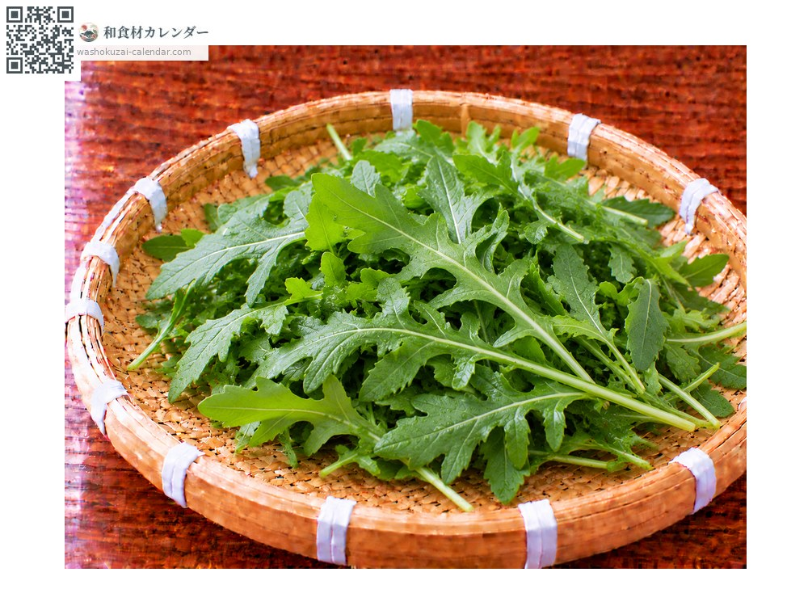
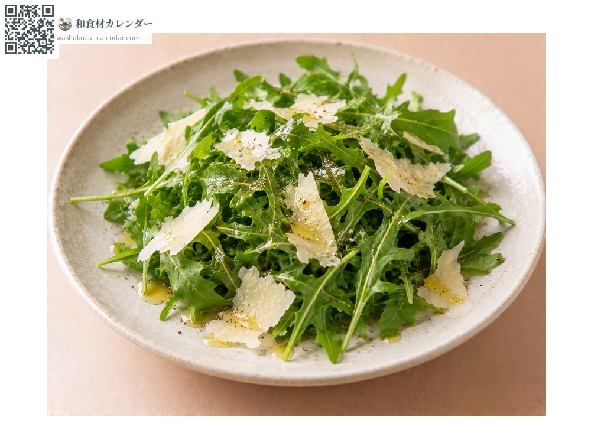
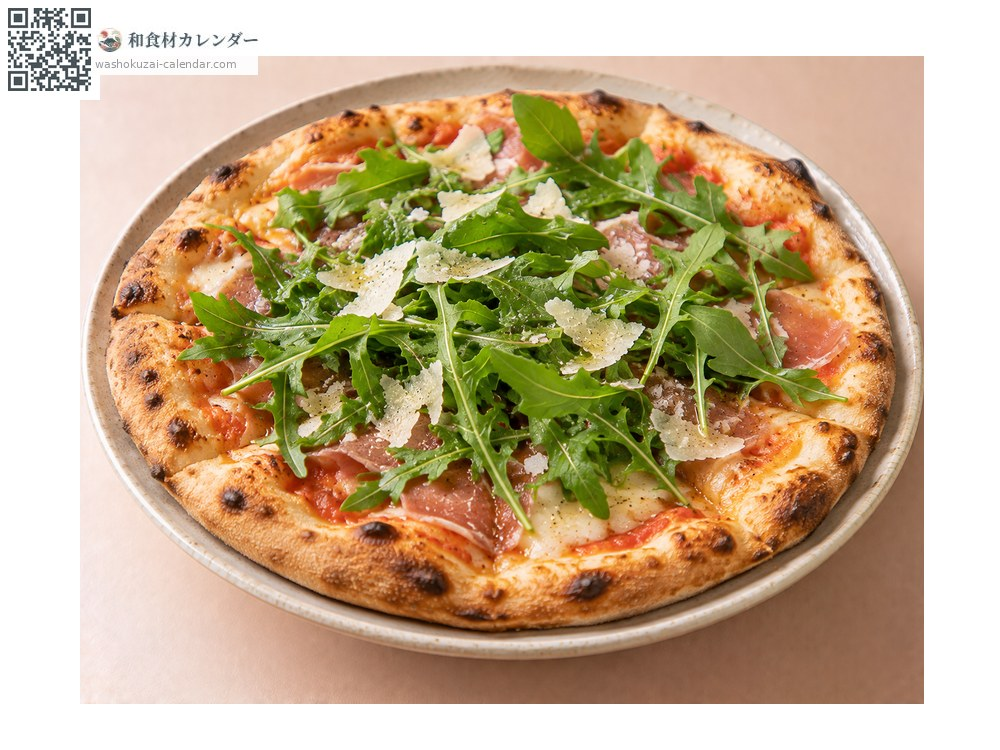
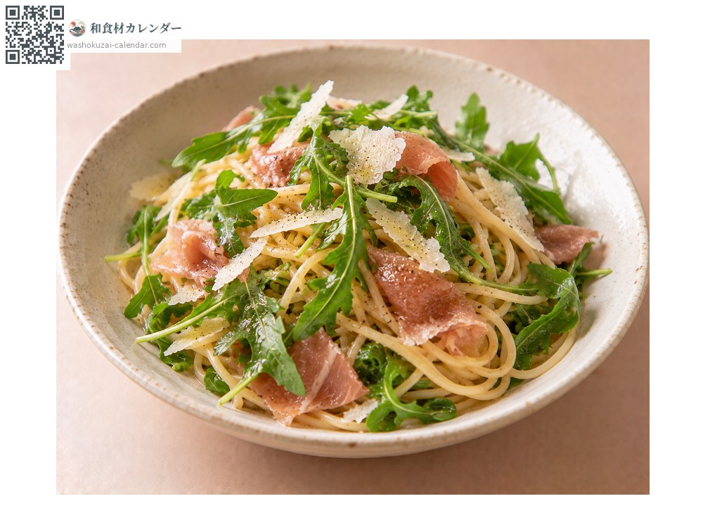
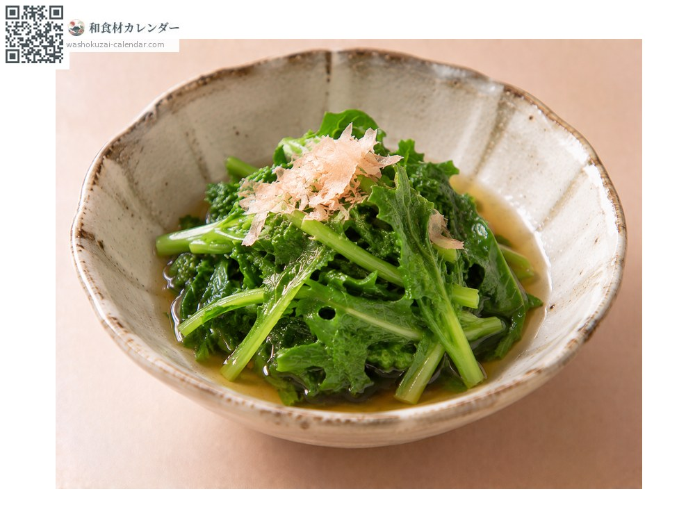

ผัก
ร็อกเก็ต (อารูกูลา)
ルッコラ るっこら
อร่อยที่สุดในเดือน มี.ค., เม.ย., พ.ค.

ช่วงที่อร่อยที่สุด
ม.ค.
ก.พ.
มี.ค.
เม.ย.
พ.ค.
มิ.ย.
ก.ค.
ส.ค.
ก.ย.
ต.ค.
พ.ย.
ธ.ค.
ช่วงอร่อยที่สุดมีจำหน่าย
วิธีปรุง

สลัด
กินสด กลิ่นคล้ายงาและขมอ่อน ๆ

โรยบนพิซซ่า
โรยตอนพิซซ่าออกจากเตา ความร้อนจะทำให้กลิ่นหอมขึ้น

พาสต้า
คลุกหรือโรยตอนท้าย เข้ากับแฮมรมควันได้ดี

โอฮิตาชิ
ลวกเร็ว ๆ แล้วแช่น้ำดาชิ ความขมจะอ่อนลง
วิธีเลือก
ใบเขียวเข้มและตึง ไม่เหี่ยว ใบหยักลึกและกลิ่นแรง
วิธีเก็บรักษา
ห่อกระดาษชื้นแล้วปิดสนิทแช่เย็น ใช้ภายใน 2-3 วัน
แหล่งผลิตหลัก
เกร็ดน่ารู้
เป็นพืชวงศ์ผักกาดถิ่นกำเนิดแถบเมดิเตอร์เรเนียน ชื่อญี่ปุ่นคือคิบานะซุซุชิโระ กลิ่นคล้ายงาและความขมอ่อน ๆ ทำให้ขาดไม่ได้ในอาหารอิตาเลียน แพร่หลายในญี่ปุ่นตั้งแต่ทศวรรษ 1990 ใบที่แก่จะขมขึ้น ใบอ่อนจึงกินง่ายกว่า
วัตถุดิบที่อร่อยที่สุดในช่วงเดียวกัน
 ดอกตูมฟุกิ
ดอกตูมฟุกิ หน่อไม้ญี่ปุ่น
หน่อไม้ญี่ปุ่น ยอดเฟิร์นวาราบิ
ยอดเฟิร์นวาราบิ ยอดเฟิร์นเซนไม
ยอดเฟิร์นเซนไม ยอดเฟิร์นโคโกมิ
ยอดเฟิร์นโคโกมิ อุโดะ (หน่อไม้ภูเขา)
อุโดะ (หน่อไม้ภูเขา) ฟุกิ (ก้านบัตเตอร์เบอร์)
ฟุกิ (ก้านบัตเตอร์เบอร์) ดอกผักกาดก้านอ่อน
ดอกผักกาดก้านอ่อน